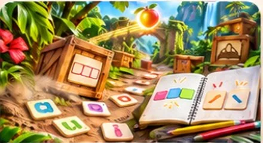
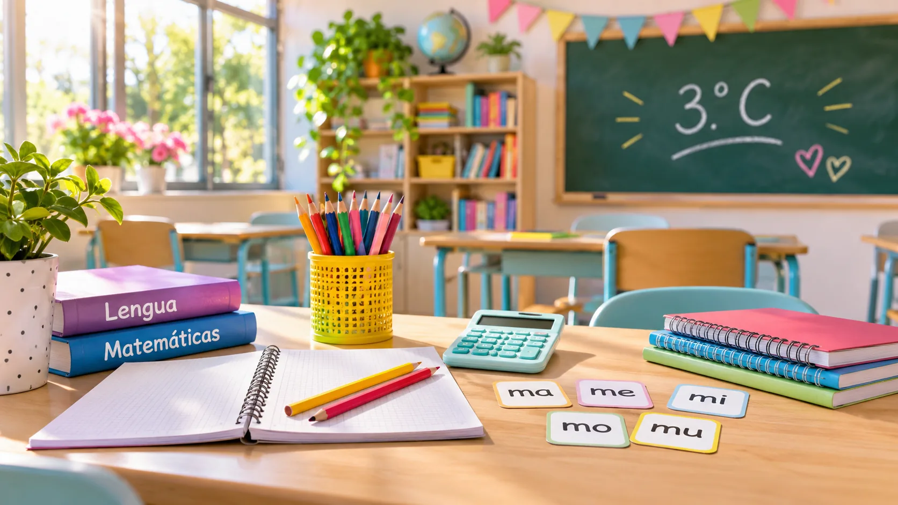
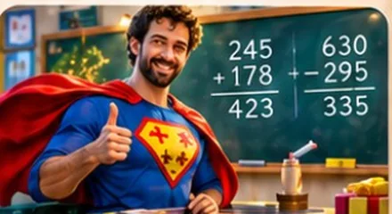
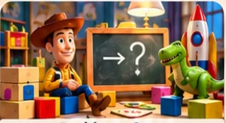
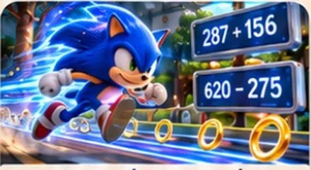
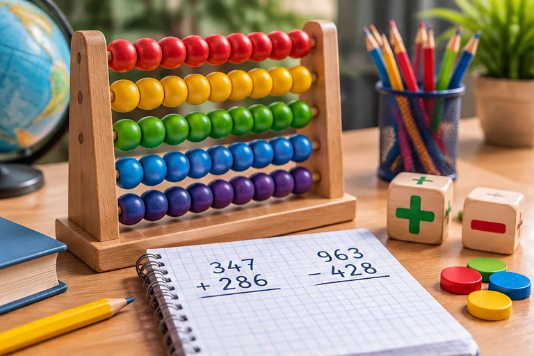

LENGUACrash Bandicoot · sílabas y acentuación
Juego de sílabas y acentuación compartido por el profesor.
Nueve juegos de Lengua y Matemáticas para practicar desde casa. Lengua: prueba el martes 24. Matemáticas: evaluación los días 26, 27 y 30 de noviembre. Science: esquemas y vídeos para repasar.

Aprende jugando
Pulsa «Jugar ahora». Puedes regresar al menú cuando quieras.

LENGUAJuego de sílabas y acentuación compartido por el profesor.
 LENGUA
LENGUA LENGUA
LENGUAUna aventura interactiva centrada en la acentuación.
 LENGUA
LENGUA LENGUA
LENGUAUn juego de acentuación ambientado en Los Simpsons.
Retos de sumas y restas
Practica con llevadas, resuelve problemas y ordena números. Lee bien cada enunciado y piensa antes de responder.

MATEMÁTICAS
MATEMÁTICAS
MATEMÁTICAS MATEMÁTICAS
MATEMÁTICAS
Science · Material de clase
Repasa las etapas históricas con los esquemas del profesor y los vídeos que habéis visto en clase.
Los últimos esquemas de Science también deben estar en el cuaderno. El profesor ha compartido además el esquema de la línea del tiempo trabajado en clase y ha indicado que podría ser una de las preguntas del examen.
Importante: no entra todo lo que aparece en los vídeos. Algunos contienen más información de la que se necesita para el examen; sirven para entender mejor lo trabajado en clase.
Estudia las tres etapas en este orden. Los acontecimientos y fechas se recogen del esquema facilitado en clase.
Inicio: después de la caída del Imperio romano.
Inicio: descubrimiento de América (1492).
Inicio: Revolución francesa.
Fuente: «ESQUEMAS LÍNEA DEL TIEMPO», documento facilitado en clase. Se conserva el contenido del esquema escolar.
Los seis enlaces compartidos por el profesor, en el mismo orden. Se abren en YouTube en una nueva pestaña.
Los vídeos son recursos complementarios. No sustituyen los esquemas ni las indicaciones del profesor sobre el examen.
Para seguir practicando

Matemáticas · 1 Matemáticas · 2
Matemáticas · 2 Lengua · 1
Lengua · 1 Lengua · 2
Lengua · 2Recursos de semanas anteriores
Actividades creadas para esta web durante los controles anteriores. No forman parte del aviso del 24 de noviembre.
La parte destacada es la sílaba tónica.
Las otras sílabas de la palabra se llaman átonas.
2 sumas y 3 restas con llevadas.